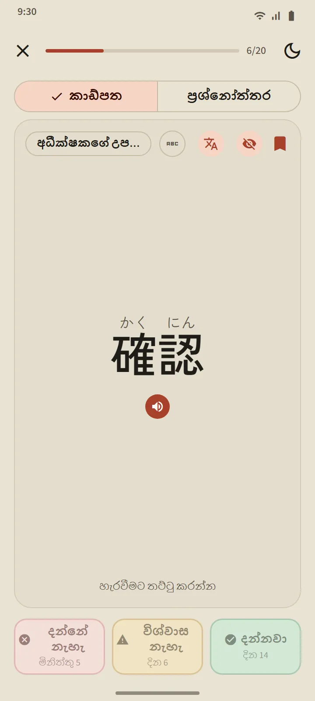
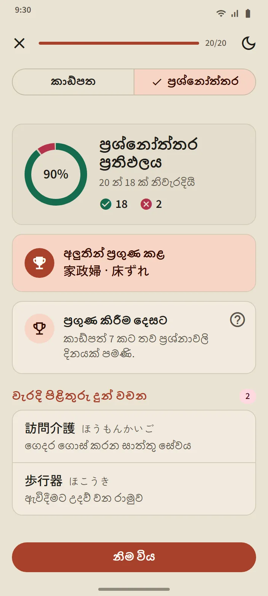
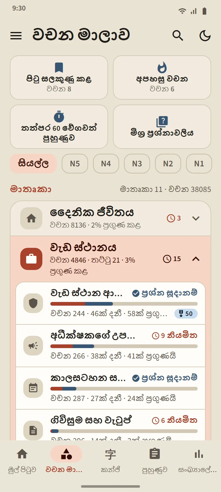
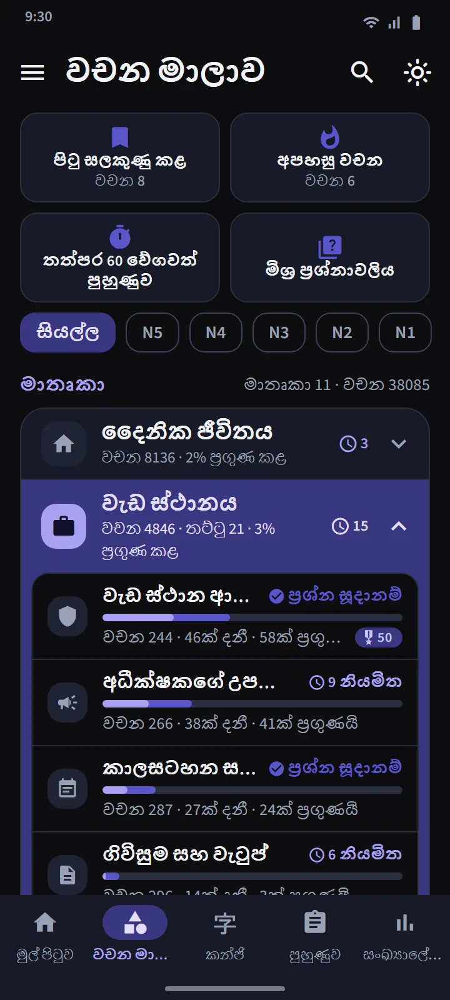
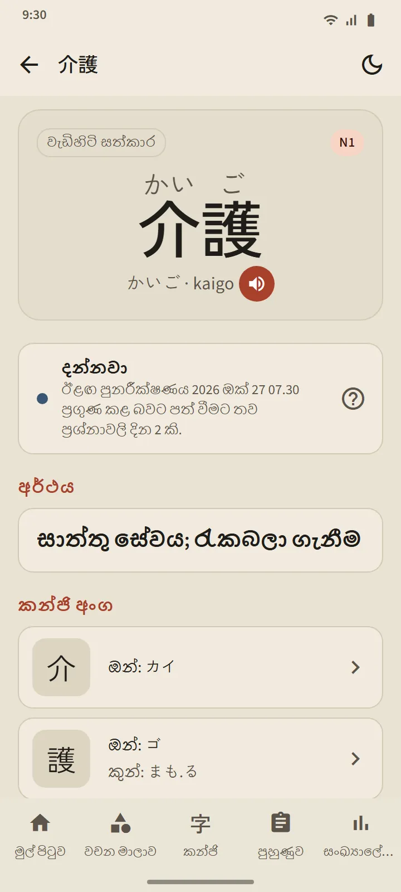

ඔබ අමතක කිරීමට ආසන්න වන විට දන්නා කාඩ්පත්
කාඩ්පතේ ඉදිරිපස වචනය පෙන්වයි (ඔබට අවශ්ය නම් ෆුරිගානා සමඟ). හරවන්න තට්ටු කරන්න: කියවීම, රෝමාජි, අර්ථය සහ සංරචක කන්ජි, සමඟ උච්චාරණ බොත්තමක්. ඉන්පසු බොත්තම් තුනෙන් එකකින් ඔබම ඇගයීම කරන්න.
සැලසුම් කිරීම කරන්නේ නවීන ෆ්ලෑෂ් කාඩ් යෙදුම්වල භාවිත වන පරතරයක් සහිත පුනරාවර්තන ඇල්ගොරිතමයම වන FSRS මඟිනි. සෑම බොත්තමක්ම වචනය නැවත එන්නේ කවදාදැයි පෙන්වයි: මිනිත්තු, දින හෝ සති කිහිපයකින්. ඔබ “දන්නවා” වැඩියෙන් පිළිතුරු දෙන තරමට පරතරය දිගු වේ.
- දන්නේ නැහැ මඟින් වචනය ඕනෑම අදියරකින් නැවත ඉගෙන ගනිමින් වෙත යවයි.
- විශ්වාස නැහැ මඟින් එහි පරතරය කෙටි කරයි.
- දන්නවා මඟින් වචනය දන්නවා වෙත ගෙන ගොස් ඊළඟ සමාලෝචනය තවත් ඈතට තල්ලු කරයි.


අදියර හතරක්, සහ ප්රගුණ කළ බව ඔප්පු කළ යුතුයි
සෑම වචනයක්ම අදියර හතරක් පසු කරයි: නව, ඉගෙන ගනිමින්, දන්නවා, ප්රගුණ කළ. කාඩ්පතේ “දන්නවා” එබීමෙන් වචනයක් දන්නවා දක්වා පමණක් ගෙන යයි. ප්රගුණ කළ තත්ත්වයට පත්වීමට ඔබ වෙනස් දින තුනකදී ප්රශ්නෝත්තරයකදී එය නිවැරදිව පිළිතුරු දිය යුතුය. ප්රගුණ කළ වචන නියමිත වූ විට දිගටම පරීක්ෂා කෙරෙන අතර, ඔබ වැරදුණොත් පහළට වැටේ.
තට්ටුවක ප්රශ්නෝත්තරය විවෘත වන්නේ එහි වචන 20ක් දන්නවා හෝ ප්රගුණ කළ තත්ත්වයේ ඇති විටය (කුඩා තට්ටු විවෘත වන්නේ ඒවායේ සියලු වචන දන්නා විටමය). ප්රශ්න දෙපැත්තටම යයි: වචනයෙන් අර්ථයට සහ අර්ථයෙන් වචනයට. අවසානයේ අලුතින් ප්රගුණ කළ වචන, එක් පියවරක් ඈතින් ඇති වචන සහ ඔබ වැරදුණු වචන පෙනේ.


මාතෘකා අනුව ඉගෙන ගන්න, සෑම වචනයක්ම නිරීක්ෂණය කරන්න
වචන මාලාව පටිත්ත කණ්ඩායම් 11ක් ලෙස බෙදා ඇති අතර, සෑම කණ්ඩායමකම කුඩා තට්ටු ඇත. ඉහළ ඇති පෙරහන සියල්ල එක් JLPT මට්ටමකට සීමා කරයි. සෑම තට්ටුවකටම තමන්ගේම තිරයක් ඇත: සම්පූර්ණ වූ ප්රතිශත වළල්ලක්, සෑම වචනයකම තත්ත්වය සහිත වචන ලැයිස්තුව, ඉගෙන ගනිමින්/දන්නවා/ප්රගුණ කළ පෙරහනක්, සහ ඉගෙන ගන්න හා ප්රශ්නෝත්තර බොත්තම්.
වැඩ ස්ථානය කණ්ඩායමේ ජපානයේ රැකියාවට යන අපේක්ෂකයන් සඳහා තට්ටු 21ක් ඇත: වැඩ ස්ථාන ආරක්ෂාව, අධීක්ෂකගේ උපදෙස්, කාලසටහන සහ පැමිණීම, ගිවිසුම සහ වැටුප්, මෙවලම් සහ මිනුම් උපකරණ, ලොජිස්ටික්ස් සහ ගබඩා කිරීම, කාර්යාලය සහ ලේඛන, ආහාර නිෂ්පාදනය, වැඩිහිටි සත්කාර, කර්මාන්තශාලාව සහ නිෂ්පාදනය, කාර්මික යන්ත්රෝපකරණ, ඉලෙක්ට්රොනික සහ විදුලි, ඉදිකිරීම්, අවන්හල සහ මුළුතැන්ගෙය, කෘෂිකර්මය, නැව් තැනීම, ගොඩනැගිලි පිරිසිදු කිරීම, ධීවර කර්මාන්තය, මෝටර් රථ සහ අලුත්වැඩියා, ගුවන් සේවා සහ ගුවන් තොටුපළ, ආගන්තුක සත්කාරය. ජපානයේ ජීවිතය සඳහා ප්රවාහනය, සාප්පු සවාරි සහ මුදල්, නිවස සහ ගෘහ භාණ්ඩ යන තට්ටු ද, සමාජ සහ පරිපාලන සහ ශරීරය සහ සෞඛ්යය කණ්ඩායම් ද ඇත.
| කණ්ඩායම | තට්ටු |
|---|---|
| දෛනික ජීවිතය | 16 |
| වැඩ ස්ථානය | 21 |
| සමාජ සහ පරිපාලන | 8 |
| ශරීරය සහ සෞඛ්යය | 8 |
| ගති ලක්ෂණ සහ හැඟීම් | 8 |
| වචන වර්ග | 5 |
| තාක්ෂණය සහ මාධ්ය | 4 |
| සොබාදහම සහ විද්යාව | 10 |
| ශාස්ත්රීය සහ අදහස් | 8 |
| සංස්කෘතිය සහ ආගම | 4 |
| ක්රීඩා සහ සෙල්ලම් | 3 |


විශේෂ තට්ටු සහ ඉක්මන් අභ්යාසය
කණ්ඩායම් ලැයිස්තුවට ඉහළින් සෑම තට්ටුවකින්ම වචන ගන්නා විශේෂ තට්ටු තුනක් ඇත: පිටු සලකුණු කළ (ඔබ තරු ලකුණු කළ වචන), අපහසු වචන (කාඩ්පත්වලදී ඔබ නිතර අමතක කරන හෝ ප්රශ්නෝත්තරවලදී වරදින වචනවලින් ස්වයංක්රීයව පිරේ), සහ තත්පර 60 වේගවත් පුහුණුව (විනාඩියක් තුළ ගැළපෙන පමණ කාඩ්පත්). සිව්වන කොටුව වන මිශ්ර ප්රශ්නාවලිය, සියලු තට්ටුවල දන්නවා සහ ප්රගුණ කළ වචන එකවර පරීක්ෂා කරයි.

වචන 38,085ක සාක්කු ශබ්දකෝෂයක්
ශීර්ෂයේ ඇති සෙවුම් අයිකනය කන්ජි, කානා, රෝමාජි හෝ අර්ථයෙන් ඕනෑම වචනයක් සොයා ගනී. ප්රතිඵල ගැළපෙන ප්රමාණය අනුව පිළිවෙළට සකසන අතර, රෝමාජි ගැළපීම අක්ෂර වින්යාස සහනයකින් කෙරේ: shinbun සහ shimbun, koohii සහ kōhī, arigato සහ arigatou සියල්ලෙන්ම එකම වචනය හමු වේ. සෑම වචනයකටම විස්තර පිටුවක් ඇත: එහි අදියර සහ ඊළඟ සමාලෝචනය, අර්ථය, කියවීම් සහිත සංරචක කන්ජි, සහ උච්චාරණ බොත්තමක්.


මට්ටම් සහ අර්ථ භාෂා
වචන මට්ටම් ඇස්තමේන්තුවකි: ජපන් පදනම (Japan Foundation) නිල වචන ලැයිස්තුවක් ප්රකාශයට පත් නොකරයි, එබැවින් මෙම සිතියම්ගත කිරීම පැරණි JLPT ලැයිස්තු සහ භාවිත සංඛ්යාතය මත ගොඩනගා ඇත. වෙනම “JFT” වචන මට්ටමක් නැත: JFT-Basic විභාගය N5 සහ N4 හි මූලික වචන මාලාවම, ඊට අමතරව රැකියා ස්ථානයේ වචන පරීක්ෂා කරයි.
අර්ථ භාෂා 11කින් සම්පූර්ණයි. ඛ්මර් සහ චීන භාෂා සෑම නොමිලේ වචනයක්ම ආවරණය කරයි; තවම පරිවර්තනය නොකළ වචන ඉංග්රීසියෙන් පෙන්වයි. පරිවර්තන භාෂාව සැකසුම් තුළ අතුරුමුහුණත් භාෂාවෙන් වෙන්ව තෝරා ගත හැක.
| මට්ටම | වචන | නොමිලේ |
|---|---|---|
| N5 | 1,030 | 1,007 |
| N4 | 2,044 | 1,503 |
| N3 | 11,230 | 4,097 |
| N2 | 11,309 | 2,290 |
| N1 | 12,472 | 503 |